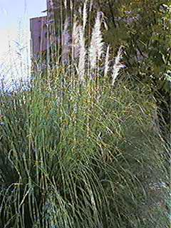
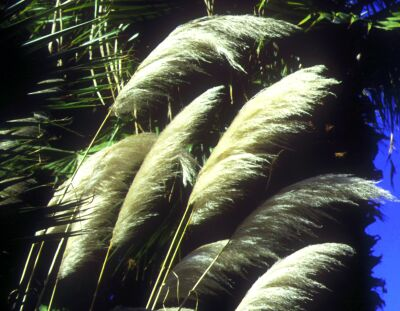

| Cortaderia
selloana (Schult. & Schult. f.) Asch. & Graebn., Syn. Mitteleur. Fl. 2(1): 325
(1900) |
Gramíneas |
| Cortaderia, carrizo o hierba de las
Pampas, plumero |
Hierba
rizomatosa |
| Hierba perenne, dioica, de unos 3 m
de altura cuando florece, en forma de macolla densa de
unos 2 m de diámetro, con numesosas hojas acintadas que
nacen de un rizoma subterráneo. Hojas casi todas basales, lineares, curvadas, verdes o amarillentas; lígula de 1’5-2 mm, con una densa línea de pelos; limbo de 2 m x 3-4 cm, con nervio central amarillo muy prominente, con margen escábrido. Inflorescencia en panículas de 30-90 cm, densas, plumosas y plateadas, formadas por espiguillas de 15-25 mm, cada una con 4-6 flores. Flores masculinas con 3 estambres y ovario rudimentario; las femeninas con un ovario desarrollado y dos estilos plumosos. Floración: de Septiembre a Octubre. |
 Foto: Carlos Romero Zarco |
 Foto: Pedro Romero Zarco |
Observaciones.-
Sus hojas son muy cortantes por los bordes; en esta característica se basa su nombre científico. Los ejemplares
femeninos son los más usados en jardinería, ya que
cuentan con inflorescencias más vistosas. Las panículas secas se usan como adorno.
|
| Área de Origen.-
Sudamérica: praderas de la Pampa argentina. |
|
| Uso en el campus.- Como mata ornamental,
dos ejemplares sobre césped. |
Localización.- |
|
Estefanía López Pérez (2001), Belén López Morales
(2002) & Carlos Romero Zarco (2003)
|
|